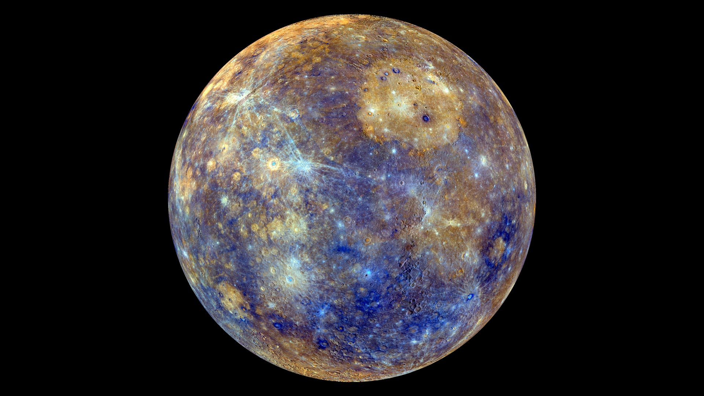

There is no strife, no prejudice, no national conflict in outer space as yet.
Its hazards are hostile to us all. Its conquest deserves the best of all mankind, and its
opportunity for peaceful cooperation many never come again. But why, some say, the moon? Why
choose this as our goal? And they may well ask why climb the highest mountain? Why, 35 years
ago, fly the Atlantic? Why does Rice play Texas?